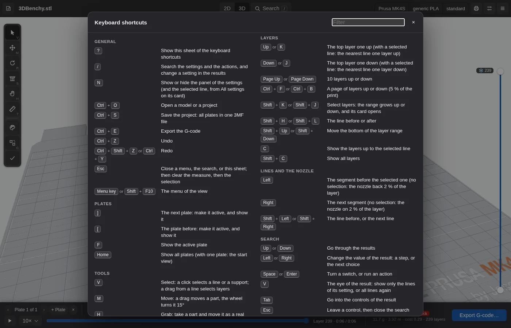

Reference
Keys and mouse
Press ? in the app to see all keys. The main menu has the sheet too: Keyboard shortcuts. Type in the sheet to filter it. On the Mac, Command replaces Ctrl.

General
| Keys | What they do |
|---|---|
? | The sheet of the keys |
/ | Search the settings and the actions |
| N | Show or hide the settings panel |
| 2 | The 2D layer view. Press 2 again for the 3D view. The main menu has the same switch: 2D view. |
| 3 | The 3D view |
| Ctrl+O | Open a model or a project |
| Ctrl+S | Save the project: all plates in one 3MF file |
| Ctrl+E | Export the G-code |
| Ctrl+Z | Undo |
| Ctrl+Shift+Z, Ctrl+Y | Redo |
| Esc | Close a menu, the search, or the sheet. Then clear the measure, then the selection. |
| Menu key, Shift+F10 | The menu of the view |
Copy and paste
| Keys | What they do |
|---|---|
| Ctrl+C | Copy the selection |
| Ctrl+X | Cut the selection: a copy, then it goes |
| Ctrl+V | Paste the last copy |
| Ctrl+Shift+V | Paste the copied parts or plate as a new plate |
| Ctrl+D | Duplicate the selected parts or the selected label |
What a copy takes, and where a paste puts it:
- Parts. A copy keeps the settings, the paint, the labels, the support trees, and the support areas and marks on each part. With parts selected, each copy goes to a free place on the bed. With no selection, the copies go to the pointer. On an empty plate, they go to the places of the copy. A paste works on each plate.
- A plate. Right-click the bed and click Copy the plate. A paste on an empty plate makes the same plate, with its layer changes and support. Paste as a new plate and Duplicate the plate make a new plate.
- A label (Label tool). A paste puts the label on the face under the pointer, with the same turn. With the pointer off the part, the copy goes under the label on the same face.
- A support area (Support tool). A paste puts the area on the part under the pointer, at the same place on that part. A copy of the part thus gets the same support.
- Layer changes. Select layers, then copy their changes. Select other layers, then paste.
- A setting value. Click a list or a switch of a setting, then copy. Click another setting, then paste. A text field uses the copy and paste of the browser.
- A line. A copy takes the report of the line, for a chat or a note.
Each paste is one step: Ctrl+Z undoes it. A label, a support area, layer changes, and a setting value also paste into another window of zslice. The right-click menu has Copy the part, Cut the part, Duplicate the part, and Paste here.
Tools
| Keys | What they do |
|---|---|
| V | Select: a click selects a line or a support. A drag from a line selects layers. |
| M | Move: a drag moves a part, the wheel turns it 15° |
| R | Turn: drag a ring of the selected part |
| S | Support: click an overhang, or draw an area. S again opens or closes the card of the tool. |
| H | Grab: pick up a part, carry it, and let go |
| T | Measure: two clicks |
| P | Paint: paint filaments on a part (Smart select or Brush) |
| L | Label: click a face of a part to put text or marks on it (Labels on a part) |
| Drag a label (Label tool) | Move it on the surface (Shift: in its plane) |
| Wheel over a label (Label tool) | Turn it 1° (Shift: 15°) |
| Delete (Label tool) | Delete the selected label |
| G | Gaps of the top layer |
| Ctrl+click, Ctrl+drag, Ctrl+wheel | Select, move, and turn a part with any tool |
| Shift+click (Select tool) | Select the run of the line: one extrusion, from a retraction to the next |
| Ctrl+Shift+click (Select tool), Shift+click (other tools) | Add a part to the selection, or take it out |
| Tab, Shift+Tab | The next part, or the part before |
| Arrow keys (selected parts) | Move the parts 1 mm (Shift: 10 mm) |
| ←, → (Turn tool) | Turn the part on the bed, 15° (Shift: 5°) |
| ↑, ↓ (Turn tool) | Tilt the part about X |
| Page Up, Page Down (Turn tool) | Tilt the part about Y |
| D, Ctrl+D | Duplicate the selected parts |
| Delete | Remove the selected parts or the selected support, or take the selected line out of the print |
| Shift (Measure, Support) | No snap |
| Enter, Backspace, Esc (Support tool) | Close the area, remove its last point, stop it |
Layers and lines
| Keys | What they do |
|---|---|
| ↑ or K, ↓ or J | One layer up or down. With a selected line: the nearest line one layer up or down. |
| Page Up, Page Down | 10 layers up or down |
| Ctrl+F, Ctrl+B | A page of layers up or down (5 % of the print) |
| Shift+K, Shift+J | Select layers: the range grows up or down, and its card opens |
| Shift+H, Shift+L | The line before or after |
| Shift+↑, Shift+↓ | Move the bottom of the layer range |
| ←, → | The segment before or after the selected one. No selection: the nozzle back or on 2 % of the layer. |
| Shift+←, Shift+→ | The line before, or the next line |
| C | Show the layers up to the selected line |
| Shift+C | Show all layers |
Plates
| Keys | What they do |
|---|---|
], [ | The next plate, or the plate before |
| F | Show the active plate |
| Home | Show all plates |
Mouse and touch
| Mouse or touch | What it does |
|---|---|
| Right drag (hold the right button) | Orbit. On a touchpad: click down with two fingers and slide to pan. |
| Left drag | Orbit. In the Select tool, a drag that starts on a line selects the layers from that layer to the layer under the pointer. |
| Middle drag, or Shift and a drag | Pan |
| Wheel, light two-finger swipe, pinch | Zoom toward the pointer |
| Double-click a side of a part | Face that side, and zoom to it |
| Double-click elsewhere | Reset the view |
| Right click | The menu of the view |